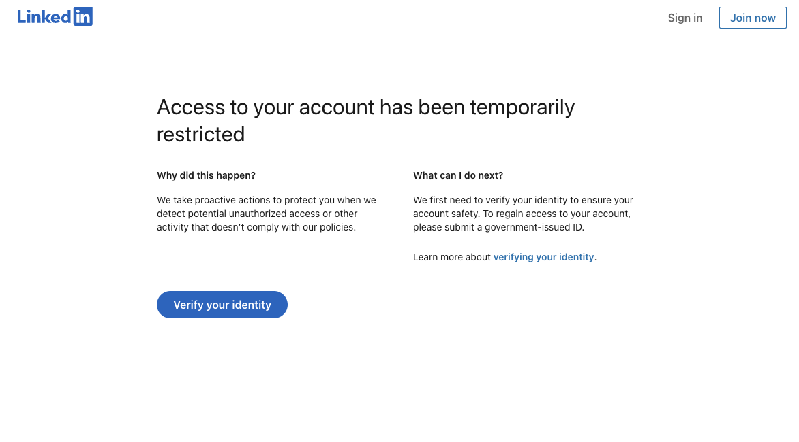

🛠️ Broken by Design. Silenced by Intent.
To a platform like LinkedIn, not conforming reads as nonexistence. If you don’t match the pattern, you’re not a person.
TL;DR: This time, the system fought back.
- 🕵️♀️ Pseudonym with Principles: I created a separate LinkedIn profile to speak freely without risking my job and played by every one of their rules.
- 🧠 Too Intentional to Tolerate: I posted a respectful, insightful critique of tech systems and user-hostile design. Real humans responded. The algorithm did not approve.
- 🚫 Locked Out, Shut Down: Without warning, LinkedIn froze the account and demanded identity verification I never agreed to provide. No login, no appeal, no voice.
- 🧱 The Pattern Problem: I didn’t get silenced for breaking rules. I got silenced for not matching their expected user archetype. The algorithm couldn’t classify me, so it ejected me.
- 🔇 Systemic Erasure by Design: Platforms like LinkedIn reward safe, self-promotional content and quietly erase anything that questions the foundation. If you don’t fit the pattern, you don’t exist.

A few days ago, I wrote about how the system failed me. By working exactly as it was designed to.
👉 The System Isn’t Broken—It’s Just Designed to Break You
That post was about cascading tech failures, user-hostile infrastructure, and what happens when you just try to connect to the internet and the system responds like you’re the problem.
Well. The system responded again. This time, with tighter precision.
I didn't post self-promoting but ultimately inconsequential workplace theater, so I didn't fit the pattern.
I didn’t match the inputs they’ve optimized for, so the algorithm couldn’t classify me.
And when the system can’t classify you, it doesn’t pause. It ejects.
This time, it shut me down.
🧰 The Setup
After writing that post, I decided to share it on LinkedIn. Not under my real name, because… Let’s be honest, I like being employed. But under a pseudonym I’d created specifically for this kind of commentary: honest, incisive, thoughtful, not career-ending.
The post was well within LinkedIn’s content boundaries. No profanity. No harassment. No conspiracy theories. Just a real-world case study of what happens when every system in your life — your ISP, your phone provider, your employer’s security tools — collides in a perfect storm of user failure by design.
And for a brief moment, it worked. A stranger reacted. Another commented. Real human beings saw the post, read it, and said something like: “This is exactly why user experience should come before what’s convenient for a company.”
A couple of people heard me. One would’ve been enough.
Let’s be clear: I didn’t go rogue.
- I played by their rules.
- I used a real email address tied to my blog.
- I gave them a real phone number and jumped through the ‘not a robot’ hoop.
- I disclosed, right on the profile, that Jenifer Jorgenson was a pseudonym.
- I wasn’t impersonating anyone. I wasn’t hiding. I was just trying to speak freely. Without risking my job.
- I followed groups that matched my topics: tech, user experience, product design, writing.
- I engaged respectfully with other people’s posts.
- I didn’t post spam. I didn’t sell anything. I didn’t scream into the void.
- I didn’t even openly disdain LinkedIn itself (or its evil Microsoft overlords).
The algorithm expects smiles. Optimism. Clear career trajectories.
It expects a real name tied to a corporate title, a polished headshot, and a headline about driving growth.
It expects career-adjacent performances.
What it got instead was a pseudonym with a blog, a snarky balloon, and a post about how the system is designed to break people.
That didn’t compute.
🔒 The Lockout Loop
LinkedIn locked me out of the account.
No warning. No email. No explanation.
Just a loop of demands: verify your identity, upload a government-issued ID, now download our app, now try again. Now... nothing.
I gave them an email address. A phone number. I passed their little “prove you’re human” test.
That wasn’t enough.
And here’s the catch:
You can’t appeal unless you’re logged in.
But you can’t log in unless you verify.
And every path to verification demands one of two things: a real-world credential. A government-issued ID. Or a corporate email address. Something that proves I belong in their system, their way.
No ID? No login.
No login? No appeal.
No appeal? No voice.
I even have the screenshot. Because of course I do...

LinkedIn's identity verification loop. No login, no appeal. Just silence unless you hand over your real-world credentials.
This wasn’t about “safety.” It wasn’t about “trust.”
It was about control.
And yes, I know LinkedIn is a private platform. This isn’t a First Amendment issue.
But it is a message. A bright, cold one:
If you don’t fit the pattern, you don’t get to participate.
Be a brand. Be a resume. Be a smiling avatar with a leadership quote.
But don’t be a pseudonym. Don’t be thoughtful and anonymous. Don’t sound human and critical.
Don't be a real person.
Because if you don’t behave like the system expects, it doesn’t just ignore you.
It erases you.
Remember the days when the Internet offered anonymity?
Not anymore.
Now it's pay to play.
And the payment is your identity, or your money. Or both.
🧩 The Pattern
Let’s be clear: I didn’t get flagged for hate speech. I didn’t violate community guidelines. I didn’t post misinformation or encourage harassment. I told the truth about how our systems can fail us. And I’ll admit, I told it with teeth.
But this isn’t really about what I said. It’s about how I said it.
More importantly, it’s about who they thought I was. Or more significantly, that they couldn’t figure out who I was.
Their systems couldn’t decide what box to put me in.
And instead of asking questions, it shut the box.
LinkedIn responded exactly as you’d expect from a platform designed to reward inoffensive self-promotion and suppress anything that might make a corporate brand nervous. Anything that doesn’t encourage more use of the platform itself.
You’re allowed to fail on LinkedIn. You’re even allowed to whine about it. So long as it’s framed as a learning experience and ends with a personal branding lesson. So long as it encourages someone else to keep using the system.
But if you analyze the failure?
If you point out how it was engineered?
If you dare to say that maybe the system wants you to feel powerless?
Maybe that’s a little too close to dangerous.
💬 The Message
I wasn’t silenced because I broke the rules.
I was silenced because I refused to speak within them the way they expected me to.
That’s the design.
Compliance is rewarded.
Critique is filtered.
Not following the herd?
The system gods flagged an anomaly.
Cue the internal alarm: Danger, Will Robinson!
And if you still try to open your mouth? The system will ask you to hold up your government ID like a digital boarding pass and smile politely while it decides whether or not you qualify as a real boy.
Broken by design.
Silenced by intent.
Because if you don’t match the pattern, you’re not a person.
💌 Want more snark in your inbox? Follow Snark Floats to get notified when new rants go live.